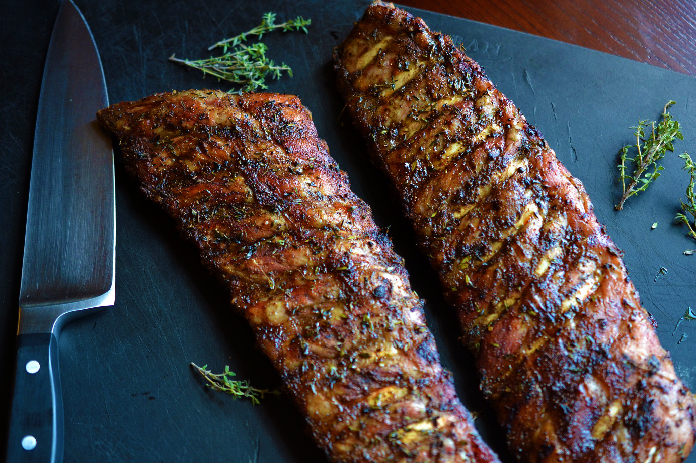

Smoked St. Louis Ribs
Home

Description
Tender and delicious ribs!
Ingredients
- 2 tbsp BBQ Rub
- 3 tbsp BBQ Sauce
- 4 tbsp Butter
- 4 ozs Juice
- 2 tbsp Sriracha Sauce
- 3 lbs St. Lous Style Pork Spare Ribs
Instructions
- Rub ribs with Sriracha sauce and seaon liberally with your favorite BBQ rub
- Set up grill to smoke at 250°F
- Smoke ribs at 250 degrees uncovered for the first 3 hours
- Wrap the ribs in foil with butter and juice and smoke the ribs wrapped for 2 hours
- Unwrap the ribs. Make a foil boat and finish smoking the ribs unwrapped for 30 minutes to 1 hour
- Sauce up the ribs if you like, slice, and enjoy!